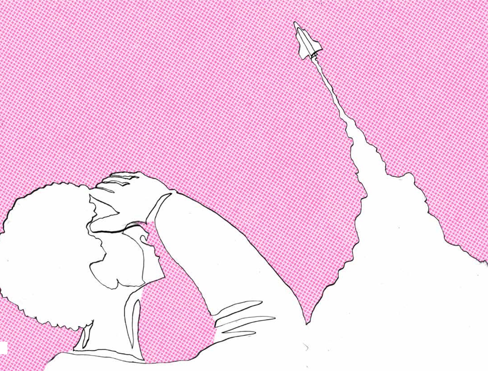

Vi vet alla hur trygghet känns och hur viktig den är i en situation när vi ska utsätta oss för något nytt. Vi vet också väldigt väl hur det känns när den ersätts med osäkerhet, när det inte känns bra att ställa en fråga eller testa något, av rädsla för att göra fel, blotta att man inte kan (än), eller för att bilden av mig själv ska bli en annan om jag visar den sårbarheten. Ledarskapsprogram har länge tagit upp psykologisk trygghet som ett avgörande fundament, men vi har inte pratat om det lika länge eller mycket i lärandesammanhang. Men trygghet är en förutsättning även där.
Det handlar inte om att slippa obehag eller om att aldrig utsätta sig för de där osäkra situationerna. Tvärtom. Det handlar om att i dem, våga vara sårbar, tänka högt, reflektera över och dra slutsatser av de misstag som måste ske, för att just lärande ska uppstå. Psykologisk trygghet är det som gör det möjligt att växa – ensam och tillsammans. Därför är miljöer där människor är trygga inget ornament vid sidan av kärnverksamheten eller någon slags personalvård. Det är förutsättningen och grunden, och helt kritiskt för att klara de utmaningar vi står mitt i, och kunna möta alla utmaningar runt om oss som verkligen ofta kan rubba känslan av trygghet. Våra stora globala kriser, teknikutvecklingen som påverkar hela arbetsmarknaden, behovet av innovation. Tryggheten är en biljett till att både orka och faktiskt alls kunna, ta sig an dessa. För att se till att vi inte bara överlever, utan även utvecklas.
Våra forskare i projektet som också själva praktiserar lärande, har både forskningsstöd och empiri på området. Daniel Sörman ser i sina workshops att deltagare ofta behöver små men tydliga ramar innan de kan experimentera fritt. Om inte de ramarna finns, vågar folk inte uttala eller dela sina idéer högt. Tryggheten är det som får dem att våga testa - och lära.
Elisabeth Åström lyfter fram betydelsen av återkommande reflektioner, när team får schemalagda reflektionstillfällen blir den gemensamma nämnaren tydlig: trygghet, struktur och kontinuerliga mikro-möten ger både individen och gruppen möjlighet att ta lärandet på allvar, och att omsätta det i vardagen.
“Psykologisk trygghet kan skapa en lärandemiljö som i sig är väldigt faciliterande.”
Psykologisk trygghet är alltså ingen lyx – utan en grundförutsättning för att vi ska kunna lära, utvecklas och samarbeta. I vårt arbete har vi gång på gång mött berättelser om hur bristen på trygghet får människor att dra sig undan. Eleven som sitter tyst fast hon egentligen vet svaret. Konsulten som inte vågar säga emot fast analysen säger något annat. Medarbetaren som låtsas förstå, trots att han inte gör det, för att inte framstå som okunnig. Operatören som inte kan förmå sig att skriva en postit-lapp eftersom känslan plötsligt liknar en bedömningssituation i skolan. Eller kanske ännu värre, när någon låtsas hänga med eller kunna - för att frågan känns dum. Alla dessa små ögonblick ser kanske oskyldiga ut, men tillsammans lägger de ett lock på både lärande och innovation. Att arbeta med sin lärandekultur är idag självklart på så många håll, men det kräver ett jobb på de här praktiska nivåerna, mycket mer än att fokusera på värdeorden i olika dokument. Vilka beteenden kan vi observera när något går fel? När en fråga ställs för femte gången? När något tog mycket längre tid än planerat?
De beteendena kommer snabbt kunna fälla avgörandet om kulturen är trygg eller otrygg.
Samtidigt har vi också mött motsatsen. Den där stunden när någon vågar sträcka upp handen och säga “jag fattar faktiskt inte” eller “vad betyder egentligen den där för kortningen?”. När ett team kan skratta åt en misslyckad idé, istället för att skämmas för den. När det blir lika självklart att fråga som att svara. Då händer något med lärandet – det blir inte bara en prestation, utan ett gemensamt utforskande. Vi förflyttar fokus från enbart resultatet - till processen som leder oss framåt, lärandeprocessen som vi behöver träna hela tiden.
Forskningen visar vägen
Begreppet psykologisk trygghet fick sitt genombrott genom Amy Edmondsons forskning på Harvard. Hon visade redan 1999 att team som presterade bäst inte var de där alla teammedlemmar var mest kompetenta, utan de grupper där det var tillåtet att vara sårbar. Där medlemmarna kände sig trygga nog att ta risker, erkänna misstag och komma med kanske bara halvt genomtänkta idéer (Edmondson, 1999) (MIT source). Just dessa grupper lärde sig snabbast, eftersom de inte slösade energi på att skydda sig själva.
Liknande resultat har återkommit i många studier, både inom skola och arbetsliv. I klassrum där elever vågar göra fel blir lärandet djupare och mer långsiktigt (Wu et al., 2022). På arbetsplatser där människor känner sig trygga ökar innovationskraften (Frazier et al., 2017). När människor däremot ständigt oroar sig för att bli dömda, avbryts den kognitiva processen – hjärnan lägger mer kraft på självskydd än på nyfikenhet.
Men psykologisk trygghet handlar inte om att vara snäll eller undvika konflikter. Det handlar om att skapa ett klimat där vi kan möta konflikterna, eller olikheter och svårigheter på ett konstruktivt sätt. Att våga tänka högt för att vi vet att vi inte blir förlöjligade, utan lyssnade på.
När tryggheten brister
De fyra drivkrafterna vi jobbat med hänger också här ihop. Vi har sett hur snabbt både nyfikenhet och motivation kan släckas i miljöer där misstag bestraffas. En chef som rynkar på näsan åt en fråga eller direkt letar en syndabock när något går fel, kan sätta tonen för lång tid framåt. En lärare som suckar åt ett felaktigt svar kan stänga av en elevs hjärna från förmågan att lära - för lång tid. Ofta är det inte stora händelser som avgör, utan summan av små signaler: en blick, en kommentar, en undertryckt fniss.
I arbetslivet säger vi att vi vill ha “högt i tak”, men verkligheten ser ofta annorlunda ut. Högt i tak är bara möjligt om golvet är stadigt. Det vill säga: om jag vet att jag inte riskerar att förlora respekt, inflytande eller kanske min anställning bara för att jag prövar en ny ofärdig idé. Det är därför psykologisk trygghet inte kan ses som något fluffigt vid sidan av “det riktiga arbetet”. Att skapa en trygg plats för lärande är därmed lika viktigt som att väcka lust.
Att designa för trygghet
Hur bygger man då psykologisk trygghet?
Våra erfarenheter visar att det inte sker av sig självt – det måste designas. Precis som med motivation behöver trygghet medvetet byggas in i miljöer för lärande. Ett första steg är att synliggöra misstag som en del av processen. När ledare berättar om egna misslyckanden, när kollegor kan skratta åt det som inte gick som planerat, då sänks tröskeln för andra att våga prova.
Ett andra steg är att aktivt träna på att lyssna. Att ställa följdfrågor, att tacka för en kommentar, att bekräfta även halvtänkta idéer. Att kanske lyssna också till det som inte sägs. På så vis blir det tydligt att varje röst är värdefull. Små vardagliga handlingar, som att ställa frågor och verkligen lyssna, kan göra arbetsplatser mer trygga och lärande (Edmondson & Lei, 2014).
Det tredje steget är att skapa strukturer som gör tryggheten till vardag, inte undantag. I skolan kan det vara att systematiskt låta elever reflektera i smågrupper innan de talar i helklass. Det gäller för övrigt även i grupper med vuxna – alla som någonsin lett ett möte eller en föreläsning där man först på slutet frågar “är det någon som har en fråga”, vet hur tyst det kan bli. På arbetsplatser kan vi jobba med “check-ins” i början av möten, där var och en får säga något utan att bli avbruten, vi kan snabbt låta människor prata i mindre konstellationer, och en facilitator som leder mot trygghet kan vara helt avgörande.
Learnable-konceptet som byggdes i vårt projekt visar hur självreflektion kan fungera när deltagaren är sin egen mentor: inspelningar av dig själv som du skickar till ditt framtida jag mitt i kursen och strax före kursslut, ger en säker rytm och tydlig progression. Även här var tryggheten kring att ens spela in sig själv, en tröskel att komma över och något att bygga upp steg för steg. Mikael Ahlström konstaterade flera gånger längs vägen att reflektion alltid verkar vara obekväm innan och befriande efteråt. Med ditt eget ansikte i rutan är obehaget dubbelt – men insikterna blir också djupare.
“Vi guidar alltid deltagarna steg för steg, så de vet vad som förväntas. Det ger en trygghet att våga experimentera. När ramarna är tydliga kan folk fokusera på själva lärandet utan oro för konsekvenser.”
Helena Sjöström såg i nästa led på NOX tydligt att självreflektion utan efterföljande gruppdiskussioner gav ytliga resultat – det var först när kollegorna möttes och ställde frågor som insikterna landade på djupet. Hon poängterar vikten av att ge reflektionen plats i kalendern: varje sprint kan avslutas med en tio minuters lär-retro som fångar insikterna innan de rinner bort. Att uttala erfarenheter högt i gruppen som en slags framplockning, blir en enkel men kraftfull metod för att förankra lärande och skapa psykologisk trygghet.
“Att sätta gemensamma riktlinjer och normer skapar en trygg miljö där folk vågar bidra. Vi behöver både stöd och struktur för att medarbetarna ska känna sig trygga nog att ta initiativ.”
Trygghet och mod går hand i hand
Ett vanligt missförstånd är att psykologisk trygghet leder till bekvämlighet. Att människor lutar sig tillbaka och slutar utmana sig själva. Men forskningen visar tvärtom: när vi känner oss trygga, vågar vi mer. Trygghet är inte motsatsen till mod, utan dess grund (Frazier et al., 2017).
Vi har sett hur grupper där tryggheten varit hög också blivit mer kreativa, vågat mer och varit uthålliga. För det är först när vi vågar säga “jag vet inte” - som vi kan lära något nytt. Först när vi vågar misslyckas, kan vi också lyckas på riktigt. Det här är något som bråkar med många experter som känner sig nödgade att kunna leverera svar och lösningar, där det inte känns tryggt att signalera att svaren är något vi måste utforska tillsammans. Även lärare kan känna av samma sak.
Att spela det säkert i lärande, handlar alltså inte om att undvika risker. Det handlar om att bygga platser, arenor och förutsättningar just för att just kunna ta och hantera risker. Om att se till att den stabila grund som gör det möjligt att pröva, falla och testa igen finns på plats. Att iterera* och prototypa** är viktiga beståndsdelar i en snabbrörlig värld, där nya kunskaper hela tiden krävs och där vi inte kan låsa oss vid den första lösningen vi kommer på. Därför kan vi på allvar öppna dörren till lärande som förändrar, först när vi har byggt trygghet.
Intervju med Frida Skog
Trygghet är inget fluff, den skapas i våra beteenden mot varandra
Frida Skog är legitimerad psykolog och även organisationspsykolog vid Sandahl Partners, där hon arbetar med ledarutveckling, grupp-processer och organisatoriskt lärande. Hon har mångårig erfarenhet av att stödja chefer och team i att utveckla samarbete, kommunikation och psykologisk trygghet.
I Safe to Play handlar det om vad som gör att människor vågar utforska och bidra i olika situationer och sammanhang. Forskningen visar alltså om och om igen att motivation och lärande växer där tryggheten finns. Där människor inte är rädda att verka okunniga, pröva något nytt eller tänka högt.
Detta är också vad Frida Skog, legitimerad psykolog och organisationspsykolog på Sandahl Partners i Stockholm, gång på gång återkommer till. Hon beskriver trygghet inte som ett tillstånd, utan som en praktik, något vi hela tiden gör tillsammans. Det är inte fluff, utan en konkret form av beteendedesign. Sambanden mellan psykologisk arbetstrygghet och konkret innovation är tydliga, på samma sätt som de mellan grupp utveckling och antal räddade liv i akutvården eller tjänade pengar i vinstdrivande organisationer.
“Vi måste sluta kalla det här för mjuka frågor”, säger hon. “Det är inte personalvård. Det här är en make it or break it-fråga för organisationer som vill klara snabbrörlighet och innovation.”
Trygghet som systemvillkor
Psykologisk trygghet har fått uppmärksamhet de senaste åren, men är alltså ingen ny idé. Forskning har länge kunnat påvisa att team som vågar ställa frågor, erkänna misstag och ge varandra konstruktiv feedback - presterar bättre över tid. Frida menar att detta har blivit ännu viktigare i takt med att arbetslivet har förändrats.
“Vi kan inte vänta till nästa planeringsmöte. Om vi ska röra oss i en vardag som ständigt skiftar måste det vara möjligt att fråga, invända och omformulera direkt. Det kräver trygghet.”
Hon ser psykologisk trygghet som ett systemvillkor för lärande. Utan den blir reflektion och utveckling kosmetiska processer, inte verkliga beteendeförändringar.
Från ord till beteende
På Sandahl Partners väljer man allt oftare att kalla sig organisationspsykologer istället för konsulter. Detta för att skicka rätt signaler till organisationer. Konsult låter som någon som kommer in och ställer skåpet rätt. Men trygghet handlar inte om att någon annan gör jobbet, den måste ägas av organisationen själv. De flesta organisationer har redan både resurser och insikter, men de kan behöva hjälp att rikta energin. Det är sånt som Sandahls hjälper till med.
Frida beskriver hur trygghet kan byggas i mikroformat, i en blick, i ett svar eller i ett tonfall. Och den kan lika gärna raseras på samma sätt och det snabbt. Forskning om civility eller hövlighet, visar att även små tecken på ohövlighet kan påverka en arbetsplats starkt. Bara att bevittna en syrlig kommentar får människor att prestera sämre och grubbla längre. Det är alltså inte detsamma som att alltid vara snäll eller att man måste tycka om alla. Men man måste vara tillräckligt trevlig.
“Det är billigt att vara hövlig, men dyrt att låta bli.”
Att spegla för att förstå
I Fridas arbete är spegling en central metod. Att återge vad någon sagt med egna ord, inte för att rätta personen utan för att försäkra sig om att man förstått. Det låter kanske simpelt men är neuropsykologiskt kraftfullt.
Hjärnan hör då budskapet två gånger, vilket ökar både förståelsen och den känslomässiga förankringen.
“Jag försöker lyssna med ögonen”, säger hon. “Och när jag blir för snabb på att ge råd räknar jag till tre, speglar istället och ställer en fråga.”
Att spegla är också ett sätt att skapa trygghet — att visa att någon faktiskt blivit lyssnad på, inte bara hörd.
Strukturen som skapar rummet
Den psykologiska tryggheten uppstår inte i frånvaro av krav, utan i en tydlig struktur. Frida talar om vikten av att börja och avsluta möten i tid, att sätta realistiska mål för stunden, och att uttala avvikelser från normer på ett vänligt, men tydligt sätt. Normer ska märkas i vardagen, inte bara hänga på väggen. De blir starka först när de levs. När någon exempelvis tidigt i ett möte öppet berättar att den behöver gå fem minuter tidigare och tar ansvar för vad den missar - istället för att bara smita iväg - stärker det kulturen mer än alla värdeord i världen.
Struktur, rytm och tydlighet blir därmed trygghetens arkitektur, ett stöd för reflektion och lärande, inte ett hinder för spontanitet.
Frågan som låter dum
Det kräver mod att ställa en fråga som kanske redan borde vara besvarad, det vet alla som någonsin försökt. Ibland får såväl elever i skolan som vuxna människor i arbetslivet svaret “som jag nyss sa…” eller liknande. Just där avgörs ofta klimatet. Om frågan möts med en himlande blick, en suck eller ett “det där har vi redan sagt”, dör frågorna i månader framåt.
“Hylla budbäraren”, säger Frida. “Du kan tänka ‘hur kunde du missa?’, men säg ‘bra att du tar upp det’. Det är billigt, och det håller nyfikenheten vid liv.”
Att skapa ett klimat där frågor är välkomna är en av de tydligaste indikatorerna på psykologisk trygghet. Vi behöver välkomna frågan även om svaret är nej och hålla det nejet både tydligt och varmt. För utan frågor, inget lärande.
När fel blir lärande
Idag pratar många om misstagens betydelse för lärande och vi säger ofta att det måste vara okej att misslyckas. Men Frida vill nyansera det:
“Vi ska inte göra fel för att det är fint att göra fel. Vi ska våga prata om fel, för att vi försökte något som var svårt. Det finns intelligenta fel som kommer av mod.”
Hon skiljer mellan rena regelbrott och rutinavvikelser, mellan komplexa fel som beror på yttre förändringar, och “intelligenta fel” – de som uppstår när man vågat prova något nytt. Det är just de processerna som behöver bli pratbara för att lärande ska ske. Vi behöver ta upp dem ur papperskorgen utan skam och bära med idéerna och uppslagen till nästa chans.
Ledarskapets roll
Psykologisk trygghet byggs visserligen av alla, men ledaren sätter ändå tonen. Det handlar inte om kontroll, utan om att hålla ramen. En chef som reagerar med irritation när någon drar ut på mötestiden, skapar samma otrygghet som en som aldrig tar tag i konflikter.
“Det vanligaste misstaget är att låta stressen ta över”, säger Frida. “Man vill vidare och tror att man är effektiv, men det kostar mer än det smakar. Ett djupt andetag och en spegling tar tio sekunder, men kan rädda en hel eftermiddag.”
Trygghet i förändring
Kan psykologisk trygghet finnas samtidigt som “sense of urgency”, alltså när vi inser att vi på något sätt har ett hot eller krav från omvärlden på förändring eller leverans? Absolut, menar Frida. Faktum är att den behövs just då.
“Trygghet betyder inte bekvämlighet. Det är det som gör att vi orkar jobba snabbt och under press utan att låsa oss.”
Hon beskriver trygghet som en dynamisk balans mellan tydliga krav och tillit att hantera dem. När människor vågar säga ifrån, fråga och bidra även under stress – då blir tryggheten ett skyddsnät, inte en mysig filt. Det här är skillnaden mellan att tycka om varandra - som faktiskt inte behövs - och att tycka om att jobba med varandra - som behövs i allra högsta grad för både mående och leverans.
Att se effekterna
Trygghet kan synas i minskad sjukfrånvaro, i antalet idéer som blir verklighet, i att fler vågar ta ordet. Det syns i små saker: jämnare talartid, fler skratt, kortare möten, färre mail med “för säkerhets skull”-ton.
“Om tryggheten inte känns i kroppen, som energi och som lusten att vara modig, så är det inte tryggt. Den måste märkas i beteendet.”

Playguide - så bygger du psykologisk trygghet i praktiken:
Lyssna med ögonen, inte bara öronen
Spegla innan du svarar
Hylla frågan, inte bara svaret
Sätt små, realistiska mål för möten och dagar
Uttala avvikelser från normer, vänligt och tidigt
Säg ifrån vid ohövlighet, även mild
Prata om fel på ett sätt som leder till lärande
Håll strukturen, inte för ordningens skull, utan för att frigöra energi till reflektion
“Psykologisk trygghet är inte en egenskap hos en grupp. Det är ett beteendemönster som hålls vid liv, om och om igen.” — Frida Skog